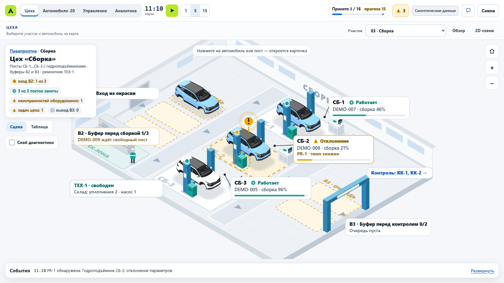
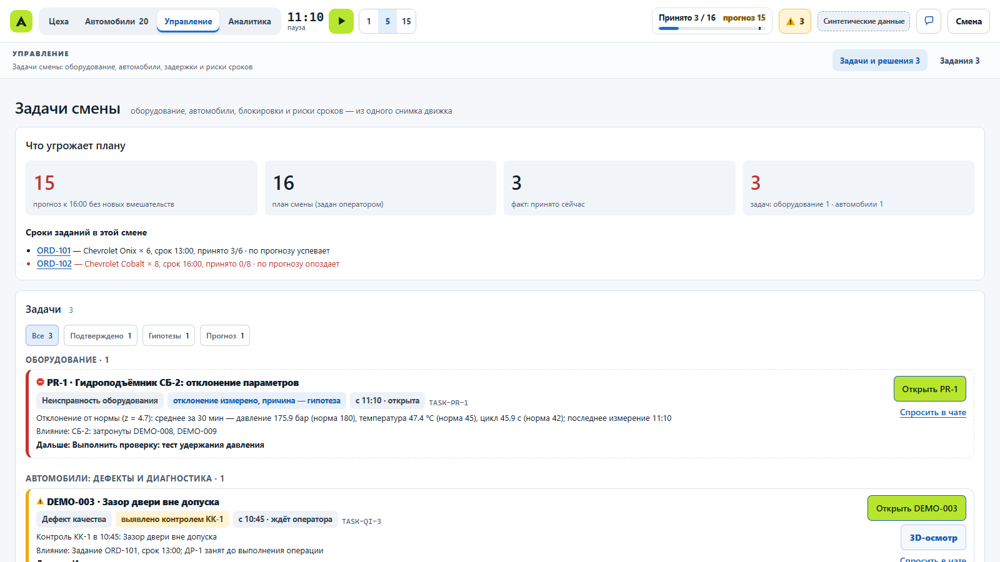
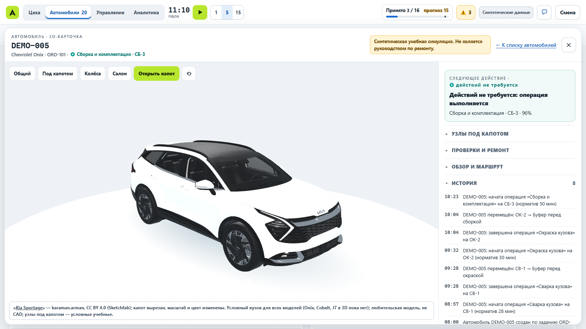

Allur Smart Factory
Цифровой двойник сборочного цеха — MVP
Кейс №2 «Цифровой двойник автомобильного завода»
Команда: Абзал, Диас, Тони
Все производственные данные в MVP синтетические. Это не данные и не система Allur.
1
Цель
Чтобы начальник смены видел отклонение раньше поломки, понимал, что мешает плану, и выбирал действие по прогнозу, а не на глаз.
2
Задача (по кейсу)
- Показать участки и оборудование завода
- Следить за выпуском, загрузкой, простоями и браком
- Показывать инциденты и отклонения
- Дать руководителю панель с итогами смены
- Прогнозировать простои и узкие места, с ИИ
3
Решение — что работает в MVP
- Карта завода: сварка → окраска → сборка → контроль → отгрузка, машины на постах
- План, факт и прогноз смены; OEE и простои по постам
- Задачи смены: поломки оборудования, дефекты машин, риски сроков
- ИИ: модель риска отказа подъёмника и сравнение решений на копиях смены
- Карточка машины, 3D-осмотр, ремонт по найденному дефекту
На 200 синтетических сменах: отказов подъёмника 0,52 → 0,03 за смену, выпуск +0,2 машины. Только симуляция, не данные завода.
4
Как это выглядит



Риски
- Данные синтетические: на реальных данных завода не проверено
- Модель обучена на синтетических сменах
- 3D-кузов условный, не Chevrolet и не JAC
- Одна смена вместо двух, без конвейера сборки
- Интеграция с системами Allur и эффект в деньгах — не измерены
6
Планы
- Загрузить данные завода: линии, простои, план, качество
- Две смены, конвейер, масштаб 5 500 машин в месяц
- Объёмные сцены всех цехов
- Посчитать эффект в деньгах
- Пилот на одном участке
7
О нас честно
- Зарегистрировались вчера
- MVP сделали за один день, полдня были на учёбе в университете
- Презентацию собрали сами сегодня
Если дадите нам шанс — покажем намного больше.
Спасибо!
8